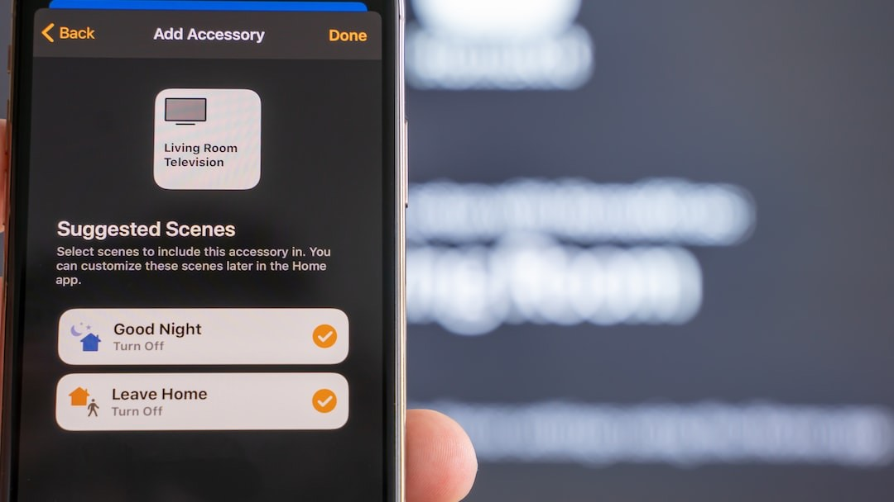
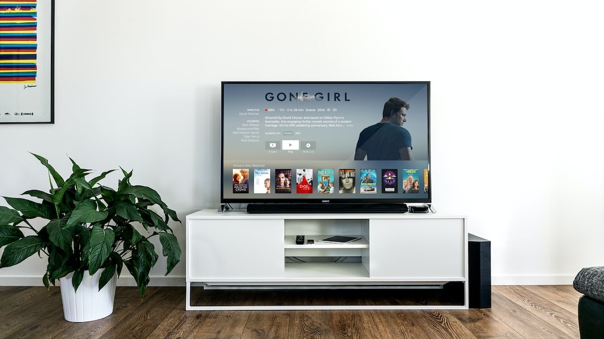
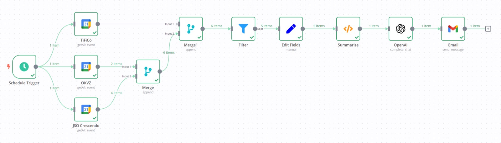
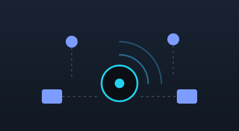
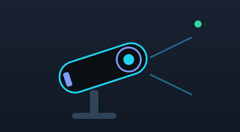
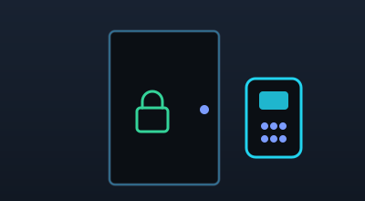

Brooklyn Helpdesk · BKHD Engineering
AI-driven automation for your home and business.
Brooklyn Helpdesk is a Brooklyn-based IT and DevOps consultancy. Its platform arm, BKHD Engineering, builds the automation underneath: LLM agents orchestrated by n8n workflows and MCP integrations that monitor, remediate, and manage your networks, systems, and spaces — so problems get fixed before they page anyone.



Who we are
Two names, one team
The consultancy that answers your call and the engineering practice that automates the work behind it.
IT / DevOps consultancy
IT and DevOps engineering across roughly 500 managed client endpoints — identity and single sign-on, CI/CD automation, LAN/WiFi design and maintenance, and device lifecycle management via MDM. We standardize client identity on Okta, Google Workspace, and Active Directory, cutting onboarding and provisioning time by about 30%.
- IT outsourcing & help desk
- Network implementations
- Physical site security & access control
- Server & client management
- User & resource lifecycle management
- Home & office automation
The automation practice
We architect the AI automation platform that runs it all: n8n workflows orchestrating LLM agents that triage alerts, reconcile DNS, and drive CI/CD across dozens of client environments — auto-remediating around 70% of alerts. On a high-availability container platform hosting 40+ client-facing services at a 99.99% SLA.
- n8n automation with LLM agents & MCP servers
- Observability & monitoring
- High availability
- Database management
- Cloud configuration & management
- Self-hosted cloud management
- Terraform / infrastructure as code
LLMs, n8n & workflows
Automation that acts, not just alerts
We connect your tools to LLM agents through Model Context Protocol servers and wire the logic together in n8n — so routine operations run themselves, at home and at the office.
LLM agents & MCP
Custom MCP server integrations expose your git/CI, metrics, DNS, and SIEM to AI agents under per-scope, least-privilege authorization. Self-hosted models (Ollama) keep sensitive data in-house.
n8n workflow automation
Event-driven workflows stitch your systems together — triage alerts, reconcile records, run CI/CD, and hand decisions to agents. Auditable, versioned, and running on your infrastructure.
Home & office automation
Presence-aware scenes and device control with Home Assistant, Homebridge/HomeKit, Matter, Thread, Zigbee and Z-Wave — lighting, climate, and access that respond to how the space is actually used.
Monitoring & network management
Full-stack visibility, managed networks
You can't automate what you can't see. We instrument the whole stack and keep the network healthy — with the same telemetry feeding the agents that remediate it.
Observability
Grafana, Prometheus, and VictoriaLogs dashboards with actionable alerting. Syslog and network-log analytics ingesting at scale, so anomalies surface early.
Network management
UniFi-based LAN and WiFi design, VLAN segmentation, split-horizon and DNSSEC-signed DNS, reverse proxy with TLS, and high-availability failover. Managed and monitored end to end.
Security monitoring (SIEM)
Wazuh SIEM correlates events across endpoints and infrastructure. Detections route straight into the automation platform for enrichment, containment, or escalation with context.
Physical security & access · UniFi
One platform for the network and the door
We deploy and manage the Ubiquiti UniFi stack so your connectivity, cameras, and access control live under a single pane of glass — and feed the same monitoring and automation.

UniFi Network
Gateways, switches, and access points designed for reliability — VLAN segmentation, guest isolation, WiFi optimization, and deep client visibility across every site.

UniFi Protect
Camera systems with on-site recording, smart detections, and privacy-respecting retention. Alerts integrate with monitoring so events are correlated, not just recorded.

UniFi Access
Door access control with credentials, schedules, and audit logs — tied into your identity provider and managed alongside the network from the Client Portal.
Client Portal
Manage your networks, cameras, and door access in one place. The portal opens your hosted UniFi controller at portal.bkhd.nyc.
What we deliver
Services
Automation engineering
LLM agents, MCP integrations, and n8n workflows tailored to your operations.
Managed IT & DevOps
Endpoint management, IAM/SSO, MDM, and CI/CD across your fleet.
Network design & management
UniFi LAN/WiFi, VLANs, DNS, TLS, and high-availability infrastructure.
Monitoring & SIEM
Grafana/Prometheus observability and Wazuh security monitoring, wired to auto-remediation.
Physical security & access
UniFi Protect cameras and UniFi Access door control, integrated with identity.
Home & office automation
Home Assistant / HomeKit scenes, presence automation, Matter/Thread/Zigbee.
Get in touch
Let's automate something
Tell us what's manual, fragile, or unmonitored — we'll show you what it looks like automated.
Founder & background
The full engineering résumé, project history, and skills live on the founder's site.